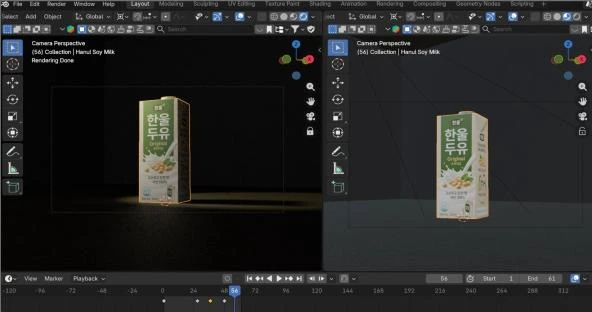
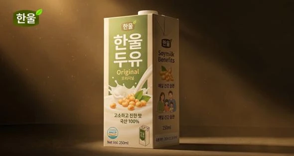
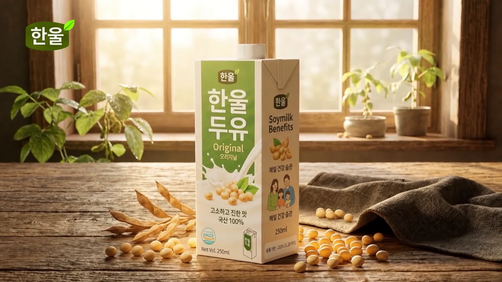
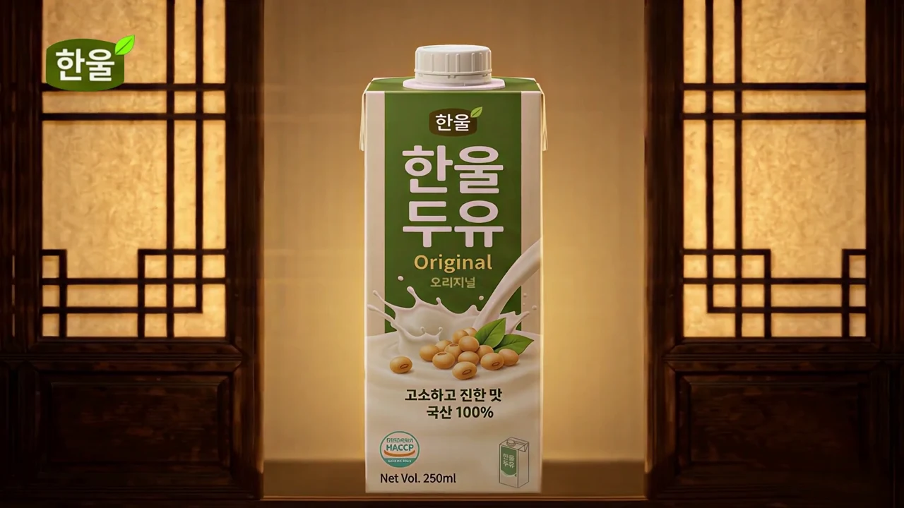

3D로 구도를 잡았습니다.
제품 패키지의 더미를 만들고 카메라와 조명, 오브젝트의 위치를 구성했습니다.
BRAND / PRODUCT / 3D + AI / PERSONAL CONCEPT
Soy Milk Brand Film
한국적인 따뜻함을 담은 가상의 두유 브랜드입니다. 로고·패키지 비주얼에서 출발해 제품 장면을 구성하고, 짧은 브랜드 필름으로 완성했습니다.
01 / BRAND FILM
창으로 들어오는 빛과 나무의 질감, 콩과 두유의 이미지를 연결했습니다. 제품의 건강한 이미지를 따뜻한 한국적 정서와 함께 전하려고 했습니다.
02 / MAKING THE FILM



제품 패키지의 더미를 만들고 카메라와 조명, 오브젝트의 위치를 구성했습니다.
3D 샷을 바탕으로 AI 이미지를 만들고, Photoshop 리터칭으로 제품과 배경의 디테일을 보완했습니다.
완성한 이미지를 AI로 영상화하고, 제품 클로즈업과 공간 장면을 편집해 필름으로 구성했습니다.
각 이미지는 제작 단계를 보여주는 대표 화면이며, 동일 프레임의 전후 비교는 아닙니다.
03 / PRODUCT VISUALS
원재료와 제형, 패키지와 분위기를
제품의 이미지를 담을수있게 연출했습니다


CONTINUE EXPLORING